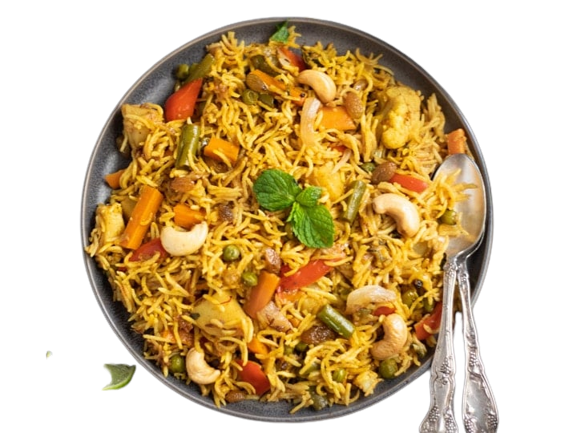

FAVORITE FOOD RECIPES AT ONE PLACE
HELLO FOODIEs,
Welcome to our flavorful Chicken Biryani recipe! This aromatic rice dish is made with tender chicken pieces marinated in spices, layered with fragrant basmati rice, and cooked to perfection. Get ready to indulge in the rich flavors and enticing aroma of this classic Indian dish.
CHICKEN BRIYANI RECIPE :
Biryani is an evergreen classic, really needs no introduction. It's aromatic, it's heavenly and one of the most loved delicacies not just in India but across the globe. It is believed that Mughals were the first to introduce biryani in North India whereas South India was exposed to its brilliance through the Arabs. Biryani flourished in some of the notable Muslim centres throughout the country - including Lucknow, old Delhi and Hyderabad, to name a few - after which it was gradually embraced by all.
FOR THE CHICKEN:
| No | INGREDIANTS | REQUIRED AMOUNT |
|---|---|---|
| 1 | chicken, cut into pieces | 700g |
| 2 | plain yogurt | 1 cup |
| 3 | lemon juice | 2 tablespoons |
| 4 | ginger-garlic paste | 1 tablespoon |
| 5 | chili powder | 1 teaspoon |
| 6 | ground cumin | 1 teaspoon |
| 7 | ground coriander | 1 teaspoon |
| 8 | turmeric powder | 1/2 teaspoon |
| 9 | Salt | your taste |
FOR THE RICE :
| No | INGREDIANTS | REQUIRED AMOUNT |
|---|---|---|
| 1 | basmati rice | 3 cups |
| 2 | water | 5 cups |
| 3 | salt | 2 teaspoons |
FOR THE MAKING :
| No | INGREDIANTS | REQUIRED AMOUNT |
|---|---|---|
| 1 | ghee or vegetable oil | 3 tablespoons |
| 2 | large onions, | 2nos thinly sliced |
| 3 | bay leaves | 2 nos |
| 4 | cumin seeds | 1 teaspoon |
| 5 | ginger-garlic paste | 1 tablespoon |
| 6 | tomatoes | 2 chopped |
| 7 | curd | 300ml |
READY TO COOK :
- Rinse the basmati rice under cold water until the water runs clear. Soak the rice in water for 30 minutes, then drain.
- In a large bowl, combine all the ingredients for the chicken marinade. Mix well to ensure the chicken is evenly coated. Cover and refrigerate for at least 1 hour, or preferably overnight for the best flavor.
- In a large pot, bring 4 cups of water to a boil. Add the soaked and drained rice along with 2 teaspoons of salt. Cook the rice until it is 70-80% cooked (it should still have a slight bite to it). Drain the rice and set aside.
- In a separate large pot or Dutch oven, heat the ghee or vegetable oil over medium heat. Add the sliced onions and cook until they turn golden brown and caramelized. Remove half of the fried onions from the pot and set aside for garnishing.
- To the pot with the remaining fried onions, add the cinnamon sticks, cardamom pods, cloves, bay leaves, and cumin seeds. Sauté for a minute until fragrant.
- Add the ginger-garlic paste and cook for another minute. Then, add the chopped tomatoes and cook until they become soft and pulpy.
- Reduce the heat to low and add the marinated chicken pieces to the pot. Cook for about 5 minutes, stirring occasionally, until the chicken starts to brown slightly.
- Stir in the plain yogurt and continue cooking for another 5 minutes to allow the flavors to blend together.
- Layer the partially cooked rice evenly over the chicken in the pot. Drizzle the saffron-infused milk over the rice for a vibrant color and aromatic touch.
- Cover the pot with a tight-fitting lid and cook on low heat for 20-25 minutes, or until the chicken is cooked through and the rice is fully cooked and fluffy.
- Remove the pot from heat and let it rest, covered, for 10 minutes to allow the flavors to meld together.
- Gently fluff the biryani with a fork, mixing the rice and chicken together. Garnish with fresh cilantro leaves and the reserved fried onions.
- Serve the chicken biryani hot with raita (yogurt sauce) and/or your favorite side dishes.
TIPS
- Feel free to adjust the spice levels or add additional ingredients like fried cashews or raisins for variation.
- For an extra burst of flavor, you can add fried cashews and raisins to the biryani during the layering process.
- Adjust the spice levels to your preference by increasing or reducing the amount of chili powder.
Enjoy your aromatic and flavorful Chicken Biryani!
If You NOT Understand This Preparation , Watch The VIDEO :
SHARE YOUR SCREENSHOT WITH RECIPE


COMMENTS
More info
briyani is one of the most popular dishes in South Asia, as well as among the diaspora from the region. Similar dishes are also prepared in other parts of the world such as in Iraq, Myanmar, Thailand, and Malaysia.[3] Biryani is the single most-ordered dish on Indian online food ordering and delivery services, and has been labelled as the most popular dish overall in India
The exact origin of the dish is uncertain. In North India, different varieties of biryani developed in the Muslim centres of Delhi (Mughlai cuisine), Rampur, Lucknow (Awadhi cuisine) and other small principalities. In South India, where rice is more widely used as a staple food, several distinct varieties of biryani emerged from Hyderabad Deccan (where some believe the dish originated[10]) as well as Tamil Nadu (Ambur, Thanjavur, Chettinad, Salem, Dindigal), Kerala (Malabar), Telangana, and Karnataka (Bhatkal) where Muslim communities were presen
According to historian Lizzie Collingham, the modern biryani developed in the royal kitchens of the Mughal Empire (1526–1857) and is a mix of the native spicy rice dishes of India and the Persian pilaf.Indian restaurateur Kris Dhillon believes that the dish originated in Persia, and was brought to India by the Mughals.[
Another theory claims that the dish was prepared in India before the first Mughal emperor Babur conquered India.[14] The 16th-century Mughal text Ain-i-Akbari makes no distinction between biryanis and pilaf (or pulao): it states that the word "biryani" is of older usage in India.[15] A similar theory, that biryani came to India with Timur's invasion, appears to be incorrect because there is no record of biryani having existed in his native land during that period